Elapsed 00:00 Check answers Reset Show answer key
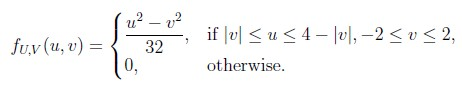
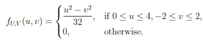
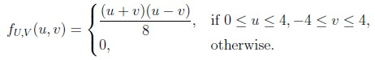
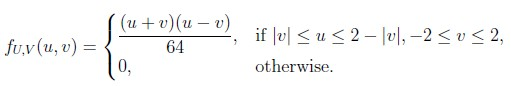
Q2 MSQ 3 marks select all that apply Which of the following is true about the singular value decomposition (SVD)?
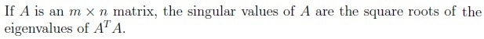
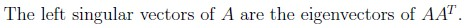
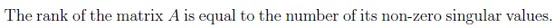
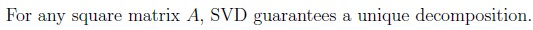
Q3 MSQ 3 marks select all that apply In the context of Principal Component Analysis (PCA), which of the following statements is/are correct?
PCA projects the original data onto a lower-dimensional subspace thatcaptures the maximum variance. The eigenvectors of the covariance matrix correspond to the directions ofmaximum variance. The principal components form a basis that is not necessarily orthogonal. The principal components obtained through PCA are always uncorrelated.
Q4 MSQ 3 marks select all that apply 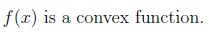
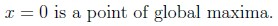
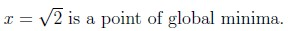
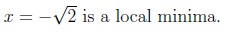
Q5 MSQ 3 marks select all that apply Which of the following statements about convex sets are true?
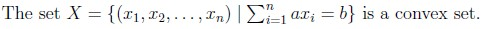
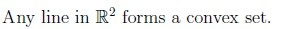
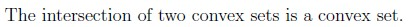
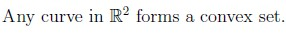
Q6 MSQ 3 marks select all that apply Which of the following options is / are true ?
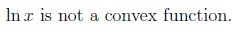
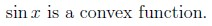
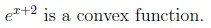
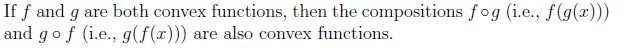
Q7 MSQ 4 marks select all that apply 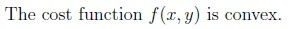
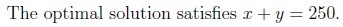
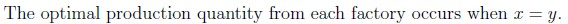
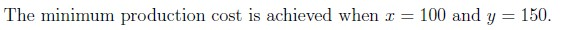
Comprehension passage - the questions below it refer to this
Based on the above data, answer the given subquestions.
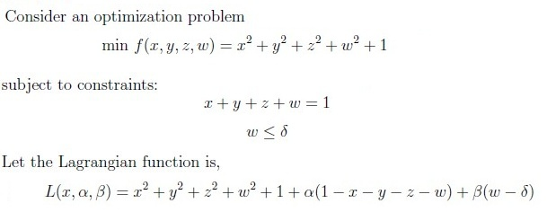
Q12 MSQ 2 marks select all that apply Which of the following statements correctly represents the Karush-Kuhn-Tucker (KKT) conditions for the given optimization problem?
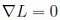
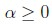
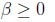
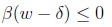
Q13 MSQ 3 marks select all that apply Which of the following statements are correct based on the KKT conditions and the solution to the optimization problem?
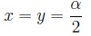
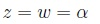
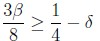
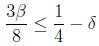
Answer key Q1 (MCQ, 3 marks): AQ2 (MSQ, 3 marks): A, B, CQ3 (MSQ, 3 marks): A, B, DQ4 (MSQ, 3 marks): C, DQ5 (MSQ, 3 marks): A, B, CQ6 (MSQ, 3 marks): A, CQ7 (MSQ, 4 marks): A, BQ8 (SA, 3 marks): 4Q9 (SA, 3 marks): 0.5Q10 (SA, 2 marks): 0.5Q11 (SA, 2 marks): 1Q12 (MSQ, 2 marks): A, CQ13 (MSQ, 3 marks): A, CQ14 (SA, 3 marks): 0.25Concepts this paper tests Auto-generated summary from the source site. Handy as a checklist; the lessons above explain each idea from scratch.
Here’s a structured summary of core topics, concepts, principles, and equations essential for the exam, followed by Mermaid knowledge graphs to visualize relationships.
1. Core Topics & Key Concepts A. Probability & Statistics Joint Probability Density Function (PDF)
f U , V ( u , v ) = f X , Y ( x , y ) ⋅ ∣ J ∣ − 1 , where J = ∣ ∂ x ∂ u ∂ x ∂ v ∂ y ∂ u ∂ y ∂ v ∣ f_{U,V}(u,v) = f_{X,Y}(x,y) \cdot |J|^{-1}, \quad \text{where } J = \begin{vmatrix} \frac{\partial x}{\partial u} & \frac{\partial x}{\partial v} \\ \frac{\partial y}{\partial u} & \frac{\partial y}{\partial v} \end{vmatrix} f U , V ( u , v ) = f X , Y ( x , y ) ⋅ ∣ J ∣ − 1 , where J = ∂ u ∂ x ∂ u ∂ y ∂ v ∂ x ∂ v ∂ y Example : For U = X + Y U = X + Y U = X + Y V = X − Y V = X - Y V = X − Y X X X Y Y Y U U U V V V ∣ J ∣ |J| ∣ J ∣ Expected Value & Linearity
For independent RVs X 1 , X 2 , X 3 X_1, X_2, X_3 X 1 , X 2 , X 3 E [ X 1 + X 2 + X 3 ] = E [ X 1 ] + E [ X 2 ] + E [ X 3 ] E[X_1 + X_2 + X_3] = E[X_1] + E[X_2] + E[X_3] E [ X 1 + X 2 + X 3 ] = E [ X 1 ] + E [ X 2 ] + E [ X 3 ] Distributions :
Uniform(a , b a,b a , b E [ X ] = a + b 2 E[X] = \frac{a+b}{2} E [ X ] = 2 a + b Poisson(λ \lambda λ E [ X ] = λ E[X] = \lambda E [ X ] = λ Exponential(λ \lambda λ E [ X ] = 1 λ E[X] = \frac{1}{\lambda} E [ X ] = λ 1 Markov’s Inequality
For non-negative RV X X X a > 0 a > 0 a > 0 P ( X ≥ a ) ≤ E [ X ] a P(X \geq a) \leq \frac{E[X]}{a} P ( X ≥ a ) ≤ a E [ X ] Cumulative Distribution Function (CDF)
F X ( x ) = x − a b − a , a ≤ x ≤ b F_X(x) = \frac{x - a}{b - a}, \quad a \leq x \leq b F X ( x ) = b − a x − a , a ≤ x ≤ b B. Linear Algebra & Matrix Decompositions Singular Value Decomposition (SVD)
For matrix A A A m × n m \times n m × n A = U Σ V T A = U \Sigma V^T A = U Σ V T Eigenvalues & Eigenvectors
For symmetric matrix A A A C. Optimization Convexity
Convex Sets :
Definition: A set S S S ∀ x , y ∈ S \forall x,y \in S ∀ x , y ∈ S λ x + ( 1 − λ ) y ∈ S \lambda x + (1-\lambda)y \in S λ x + ( 1 − λ ) y ∈ S λ ∈ [ 0 , 1 ] \lambda \in [0,1] λ ∈ [ 0 , 1 ] Examples:
Linear equality/inequality constraints (e.g., ∑ a i x i = b \sum a_i x_i = b ∑ a i x i = b Intersection of convex sets is convex. Convex Functions :
Definition: f f f f ( λ x + ( 1 − λ ) y ) ≤ λ f ( x ) + ( 1 − λ ) f ( y ) f(\lambda x + (1-\lambda)y) \leq \lambda f(x) + (1-\lambda)f(y) f ( λ x + ( 1 − λ ) y ) ≤ λ f ( x ) + ( 1 − λ ) f ( y ) Examples:
e x e^x e x x 2 x^2 x 2 − ln x -\ln x − ln x x > 0 x > 0 x > 0 Composition of convex functions is not necessarily convex. Gradient Descent
x k + 1 = x k − η ∇ f ( x k ) x_{k+1} = x_k - \eta \nabla f(x_k) x k + 1 = x k − η ∇ f ( x k ) Example : For f ( x , y ) = x 2 + 3 y 2 − 4 x + 6 y f(x,y) = x^2 + 3y^2 -4x +6y f ( x , y ) = x 2 + 3 y 2 − 4 x + 6 y ∇ f = ( 2 x − 4 , 6 y + 6 ) \nabla f = (2x -4, 6y +6) ∇ f = ( 2 x − 4 , 6 y + 6 ) Karush-Kuhn-Tucker (KKT) Conditions
For optimization with constraints: min f ( x ) s.t. h ( x ) = 0 , g ( x ) ≤ 0 \min f(x) \quad \text{s.t.} \quad h(x) = 0, \quad g(x) \leq 0 min f ( x ) s.t. h ( x ) = 0 , g ( x ) ≤ 0 KKT Conditions :
Stationarity: ∇ f ( x ) + ∑ α i ∇ h i ( x ) + ∑ β j ∇ g j ( x ) = 0 \nabla f(x) + \sum \alpha_i \nabla h_i(x) + \sum \beta_j \nabla g_j(x) = 0 ∇ f ( x ) + ∑ α i ∇ h i ( x ) + ∑ β j ∇ g j ( x ) = 0 Primal feasibility: h ( x ) = 0 h(x) = 0 h ( x ) = 0 g ( x ) ≤ 0 g(x) \leq 0 g ( x ) ≤ 0 Dual feasibility: β j ≥ 0 \beta_j \geq 0 β j ≥ 0 Complementary slackness: β j g j ( x ) = 0 \beta_j g_j(x) = 0 β j g j ( x ) = 0 D. Principal Component Analysis (PCA) Key Ideas :
Projects data onto directions of maximum variance (eigenvectors of covariance matrix). Principal components are uncorrelated and form an orthogonal basis . Steps:
Compute covariance matrix Σ \Sigma Σ Find eigenvalues λ i \lambda_i λ i v i v_i v i Sort eigenvectors by descending λ i \lambda_i λ i E. Function Analysis Polynomial Functions
Critical Points & Extrema
Find critical points by setting f ′ ( x ) = 0 f'(x) = 0 f ′ ( x ) = 0 Second derivative test for convexity/concavity. 2. Key Equations Summary Topic Equation Joint PDF Transformation f U , V ( u , v ) = f X , Y ( x , y ) ⋅ ∣ J ∣ − 1 f_{U,V}(u,v) = f_{X,Y}(x,y) \cdot |J|^{-1} f U , V ( u , v ) = f X , Y ( x , y ) ⋅ ∣ J ∣ − 1 Expected Value E [ a X + b Y ] = a E [ X ] + b E [ Y ] E[aX + bY] = aE[X] + bE[Y] E [ a X + bY ] = a E [ X ] + b E [ Y ] Markov’s Inequality P ( X ≥ a ) ≤ E [ X ] a P(X \geq a) \leq \frac{E[X]}{a} P ( X ≥ a ) ≤ a E [ X ] SVD A = U Σ V T A = U \Sigma V^T A = U Σ V T σ i = λ i ( A T A ) \sigma_i = \sqrt{\lambda_i(A^T A)} σ i = λ i ( A T A ) Gradient Descent x k + 1 = x k − η ∇ f ( x k ) x_{k+1} = x_k - \eta \nabla f(x_k) x k + 1 = x k − η ∇ f ( x k ) KKT Conditions ∇ L = 0 \nabla L = 0 ∇ L = 0 β j g j ( x ) = 0 \beta_j g_j(x) = 0 β j g j ( x ) = 0 β j ≥ 0 \beta_j \geq 0 β j ≥ 0 PCA Σ v i = λ i v i \Sigma v_i = \lambda_i v_i Σ v i = λ i v i Convex Function f ( λ x + ( 1 − λ ) y ) ≤ λ f ( x ) + ( 1 − λ ) f ( y ) f(\lambda x + (1-\lambda)y) \leq \lambda f(x) + (1-\lambda)f(y) f ( λ x + ( 1 − λ ) y ) ≤ λ f ( x ) + ( 1 − λ ) f ( y )
Graph 2: Linear Algebra & Optimization Graph 3: Machine Learning (PCA) Graph 4: Function Analysis 4. Exam Tips Probability :
Practice transforming joint PDFs using Jacobians. Memorize expected values for common distributions. Linear Algebra :
Understand SVD’s relationship with eigenvalues/eigenvectors. Know how to compute singular values from A T A A^T A A T A Optimization :
For KKT, focus on stationarity, primal/dual feasibility, and complementary slackness. Verify convexity before applying gradient descent. PCA :
Remember that principal components are uncorrelated and orthogonal . Function Analysis :
Check symmetry (even/odd), convexity (second derivative), and roots (discriminant).